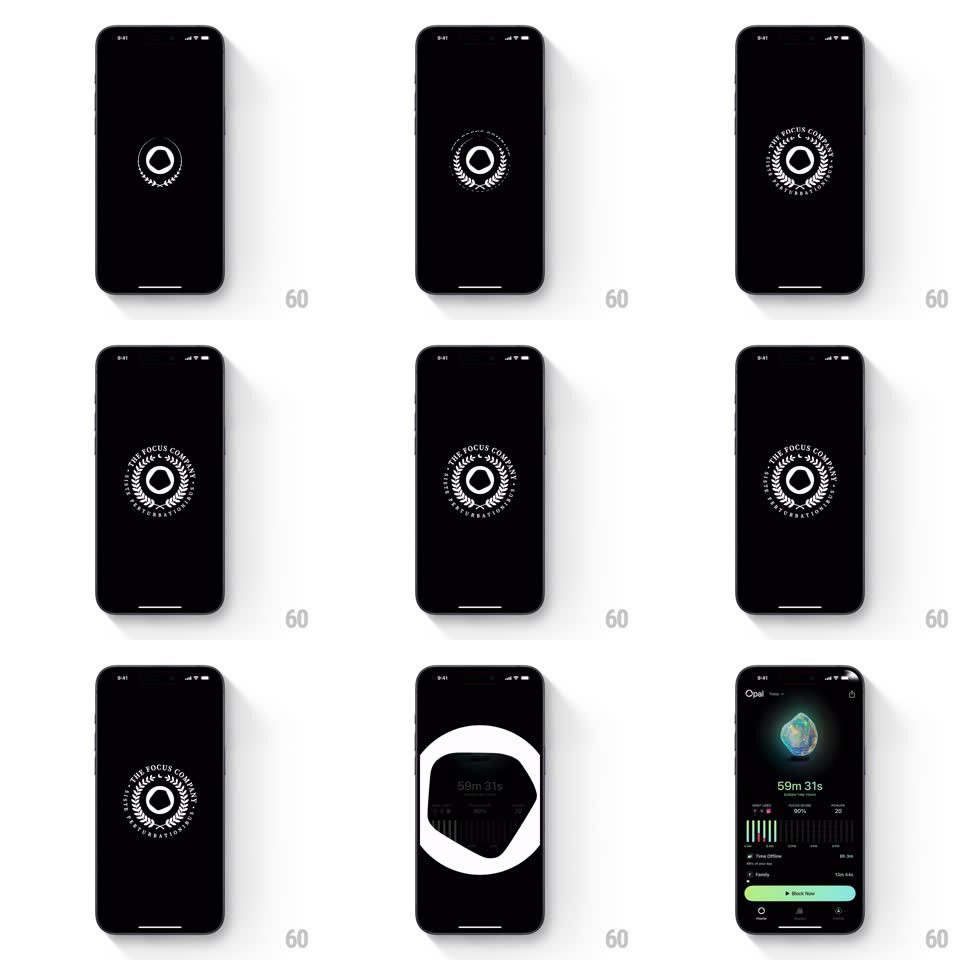

Media
Frame-by-frame

Rebuild this interaction 1:1: Opal's splash - on black, a small white ring appears, circular brand text draws on around it ("THE FOCUS JOURNEY..."), the emblem holds and then page-curls away into the main dashboard with its glowing gem and Block Now button.

Rebuild this interaction 1:1: Opal's splash - on black, a small white ring appears, circular brand text draws on around it ("THE FOCUS JOURNEY..."), the emblem holds and then page-curls away into the main dashboard with its glowing gem and Block Now button.
## Integration
Integration: stack-agnostic spec - springs given as stiffness/damping, timed motions as duration + curve; map every value to your framework and animation library of choice.
## Scene
Pure black splash with the white Opal emblem at center: a small ring, then a laurel of circular text around it ("THE FOCUS JOURNEY" repeated around the circumference). Destination: the Opal home dashboard (glowing gem, "59m 31s" timer, stats bars, green Block Now button).
## Motion spec
Pattern: staged emblem build + page-curl exit.
- The center ring draws on (stroke sweep 0 -> 360deg, 300ms, ease-out).
- The circular text ring materializes around it: characters fade in sequence clockwise (over ~600ms) while the ring scales 0.85 -> 1 (spring ~300/20).
- The emblem holds ~600ms with a faint slow rotation of the text ring (~20s per revolution).
- Exit: the splash peels away with a page-curl from the bottom-right corner - the black page curls up like paper, revealing the dashboard beneath as the curl travels across the screen (~500ms, ease-in-out), with a soft shadow on the curl's underside.
- The dashboard is fully live the moment the curl completes.
## Calibration
- Total splash is ~1.5-2s - brand beat, not a loading wall.
- The curl follows a fixed corner path; it is not finger-driven.
## Reduced motion
Splash crossfades to the dashboard, no curl.
## Don't miss
- The circular text is real type on a circle path, with small laurel marks flanking the bottom.
- The curl reveals the actual dashboard (fully rendered), not a placeholder.